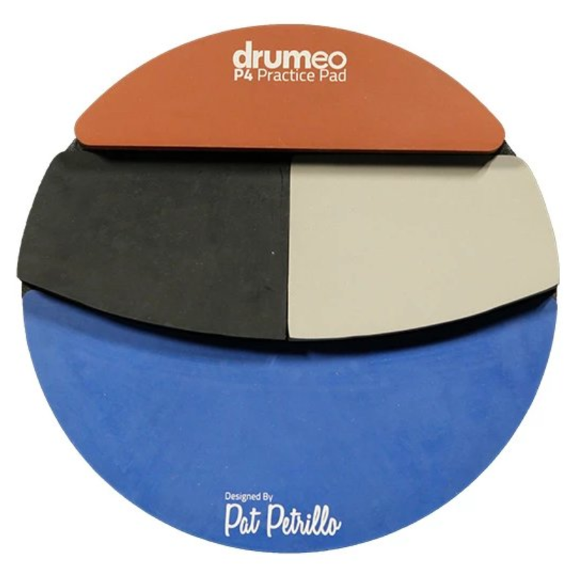

Drumeo P4 Practice Pad
On sales

click to watch a big picture.
Do you want to be good at playing drum?
The premise is, of course, basic skills.
Anyone who has been exposed to the drum kit should know that basic skills can be practiced on the dumb drum pad, which is convenient and does not disturb the other people.
The ordinary dumb drum pad has only one layer of one material, and whatever way you play there is only one sound. Of course, it will be boring when it is long.
Choose Drumeo P4 Practice Pad! You can feel to play on real drum.